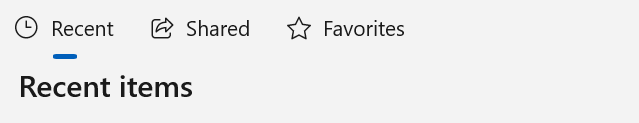

Selector bar
A selector bar lets a user switch between a small number of different sets or views of data. One item at a time can be selected.

When a user selects an item in the selector bar, you typically change the view by either:
- navigating between different pages in your app.
- changing the data shown in a collection control.
The selector bar is a light-weight control that supports an icon and text. It's intended to present a limited number of options so it does not rearrange items to adapt to different window sizes.
Is this the right control?
Use a SelectorBar when you want to let a user navigate between a limited number of views or pages and only one option can be selected at once.
Some examples include:
- Switching between "Recent," "Shared," and "Favorites" pages, where each page displays a unique list of content.
- Switching between "All," "Unread," "Flagged," and "Urgent" views, where each view displays a uniquely filtered list of email items.
When should a different control be used?
There are some scenarios where another control may be more appropriate to use.
- Use NavigationView when you require consistent, top-level app navigation that adapts to different window sizes.
- Use TabView when the user should be able to open, close, rearrange, or tear off new views of the content.
- Use PipsPager when you need regular pagination of a single data view.
- Use RadioButtons when an option is not selected by default, and context is unrelated to page navigation.
Create a SelectorBar control
- Important APIs: SelectorBar class, Items property, SelectionChanged event, SelectorBarItem class
The WinUI 3 Gallery app includes interactive examples of most WinUI 3 controls, features, and functionality. Get the app from the Microsoft Store or get the source code on GitHub
This XAML creates a basic SelectorBar control with 3 sections of content.
<SelectorBar x:Name="SelectorBar">
<SelectorBarItem x:Name="SelectorBarItemRecent"
Text="Recent" Icon="Clock"/>
<SelectorBarItem x:Name="SelectorBarItemShared"
Text="Shared" Icon="Share"/>
<SelectorBarItem x:Name="SelectorBarItemFavorites"
Text="Favorites" Icon="Favorite"/>
</SelectorBar>
This shows how to add a SelectorBarItem in code.
SelectorBarItem newItem = new SelectorBarItem()
{
Text = "New Item",
Icon = new SymbolIcon(Symbol.Add)
};
selectorBar.Items.Add(newItem);
SelectorBar items
You populate the SelectorBar Items collection with SelectorBarItem objects. You can do this directly in XAML or in code. Because it's intended to display a limited number of options, SelectorBar does not have an ItemsSource property for binding to an external collection of items.
Item content
The SelectorBarItem class provides Text and Icon properties that you use to set the content of your selector bar. You can set one or both properties; however, we recommend that you set the Text property to make the item more meaningful.
The Icon property takes an IconElement, so you can use any of these derived icon types:
Note
SelectorBarItem inherits the Child property from ItemContainer. You can use this property to set the content, but we don't recommend this. Content set this way will not get the styling and visual states provided by the SelectorBarItem control template.
Item selection
You can use the SelectedItem property to get or set the SelectorBar's active item. This is synchronized with the SelectorBarItem's IsSelected property. If you set either property, the other is updated automatically.
Whenever the SelectorBar gets focus and SelectedItem is null, SelectedItem is automatically set to the first focusable instance in the Items collection, if any exists.
Whenever the selected item is removed from the Items collection, the SelectedItem property is set to null. If SelectedItem is set to null while the SelectorBar has focus, SelectorBar will have no item selected but keeps focus.
Setting SelectedItem to an element that is not currently in the Items collection throws an exception.
There is no SelectedIndex property, but you can get the index of the SelectedItem like this:
int currentSelectedIndex =
selectorBar.Items.IndexOf(selectorBar.SelectedItem);
Selection changed
Handle the SelectionChanged event to respond to the users selection and change what is shown to the user. The SelectionChanged event is raised when an item is selected in any of these ways:
- UI Automation
- Tab focus (and a new item is selected)
- Left and right navigation within the SelectorBar
- Tapped event through mouse or touch
- Programmatic selection (through either the SelectorBar.SelectedItem property or SelectorBarItem's IsSelected property).
When a user selects an item, you typically change the view by either navigating between different pages in your app or changing the data shown in a collection control. Examples of both are shown here.
Navigate with transition animations
Tip
You can find these examples in the SelectorBar page of the WinUI Gallery app. Use the WinUI Gallery app to run and view the full code.
This example demonstrates handling the SelectionChanged event to navigate between different pages. The navigation uses the SlideNavigationTransitionEffect to slide the pages in from the left or right, as appropriate.
<SelectorBar x:Name="SelectorBar2"
SelectionChanged="SelectorBar2_SelectionChanged">
<SelectorBarItem x:Name="SelectorBarItemPage1" Text="Page1"
IsSelected="True" />
<SelectorBarItem x:Name="SelectorBarItemPage2" Text="Page2" />
<SelectorBarItem x:Name="SelectorBarItemPage3" Text="Page3" />
<SelectorBarItem x:Name="SelectorBarItemPage4" Text="Page4" />
<SelectorBarItem x:Name="SelectorBarItemPage5" Text="Page5" />
</SelectorBar>
<Frame x:Name="ContentFrame" IsNavigationStackEnabled="False" />
int previousSelectedIndex = 0;
private void SelectorBar2_SelectionChanged
(SelectorBar sender, SelectorBarSelectionChangedEventArgs args)
{
SelectorBarItem selectedItem = sender.SelectedItem;
int currentSelectedIndex = sender.Items.IndexOf(selectedItem);
System.Type pageType;
switch (currentSelectedIndex)
{
case 0:
pageType = typeof(SamplePage1);
break;
case 1:
pageType = typeof(SamplePage2);
break;
case 2:
pageType = typeof(SamplePage3);
break;
case 3:
pageType = typeof(SamplePage4);
break;
default:
pageType = typeof(SamplePage5);
break;
}
var slideNavigationTransitionEffect =
currentSelectedIndex - previousSelectedIndex > 0 ?
SlideNavigationTransitionEffect.FromRight :
SlideNavigationTransitionEffect.FromLeft;
ContentFrame.Navigate(pageType, null, new SlideNavigationTransitionInfo()
{ Effect = slideNavigationTransitionEffect });
previousSelectedIndex = currentSelectedIndex;
}
Display different collections in an ItemsView
This example shows how to change the data source of an ItemsView when the user selects an option in the SelectorBar.
<SelectorBar x:Name="SelectorBar3"
SelectionChanged="SelectorBar3_SelectionChanged">
<SelectorBarItem x:Name="SelectorBarItemPink" Text="Pink"
IsSelected="True"/>
<SelectorBarItem x:Name="SelectorBarItemPlum" Text="Plum"/>
<SelectorBarItem x:Name="SelectorBarItemPowderBlue" Text="PowderBlue"/>
</SelectorBar>
<ItemsView x:Name="ItemsView3"
ItemTemplate="{StaticResource ColorsTemplate}"/>
<ItemsView.Layout>
<UniformGridLayout/>
</ItemsView.Layout>
</ItemsView/>
private void SelectorBar3_SelectionChanged
(SelectorBar sender, SelectorBarSelectionChangedEventArgs args)
{
if (sender.SelectedItem == SelectorBarItemPink)
{
ItemsView3.ItemsSource = PinkColorCollection;
}
else if (sender.SelectedItem == SelectorBarItemPlum)
{
ItemsView3.ItemsSource = PlumColorCollection;
}
else
{
ItemsView3.ItemsSource = PowderBlueColorCollection;
}
}
UWP and WinUI 2
Important
The SelectorBar control is not available for UWP and WinUI 2. For alternatives, see NavigationView or TabView.